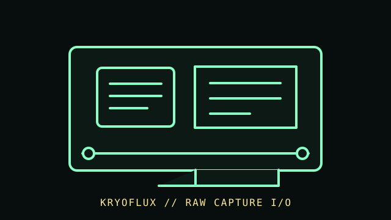

[ FLOPPY DRIVES // IDENTIFIED MODEL ]
KryoFlux USB Floppy Controller
KryoFlux is a USB floppy controller and flux-level acquisition system used with a separate supported floppy mechanism. This is an interface/controller record, not a drive, disk emulator, or guarantee of a decoded image.

MODEL IDENTIFICATION: KryoFlux controller board; document the board revision, firmware/software, cable, drive mechanism, and capture settings. The record distinguishes source-documented facts from model/revision-dependent behavior; it is not a compatibility guarantee.
Recorded specifications
| Catalog model | KryoFlux USB Floppy Controller |
|---|---|
| Device type | Controller-adjacent preservation interface |
| Interface / connector | USB to the host computer and floppy signals to a separately connected mechanism; exact wiring and power procedures follow the board documentation. |
| Media / formats | No media capacity is assigned to the controller. Flux captures are acquisition data; track layout and decoded formats depend on the drive, disk, capture settings, and conversion software. |
| Revision caution | Confirm the complete model designation, nameplate, connector, board/firmware revision, and service-manual edition. Related family names are not proof of interchangeable parts or host support. |
Host and controller compatibility
- Requires a separate drive and compatible host software; confirm the specific board’s cable pinout and power method before connection. Never assume that a PC floppy header or USB adapter is electrically interchangeable.
- It can acquire magnetic transition information for preservation workflows; reading flux does not by itself verify filesystem integrity or recover every damaged/copy-protected disk.
- Record the drive model/alignment, board/firmware/software versions, capture parameters, and checksums. Retain original captures and log any conversion as a separate derivative.
Safe preservation and cleaning
Keep power disconnected during wiring and inspection. Do not insert damaged media into a drive; clean only under the drive manufacturer’s service instructions. Preserve original media, capture files, and metadata separately, and avoid repeatedly reading unstable disks.
For preservation, photograph labels and connector/board markings before service; document the host, controller, software, settings, and observed condition. Keep original media or raw captures intact and verify checksummed copies before making derivatives.
Manufacturer manuals & archival references
- KryoFlux — product and technical informationProject documentation for the USB floppy controller and preservation workflow.
- KryoFlux — official homepage and documentation linksManufacturer/project source for current model and software documentation.
- Library of Congress — Digital format sustainabilityInstitutional preservation context for sustainable digital files and documentation.
Archive scans and project pages may cover a family or a particular revision. The full model/revision-specific manufacturer manual takes precedence. Capacity or recording mode is omitted where it cannot be tied to the cited model and format.